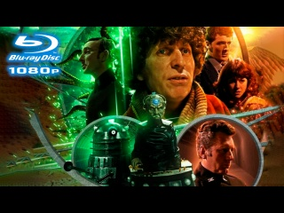
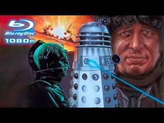
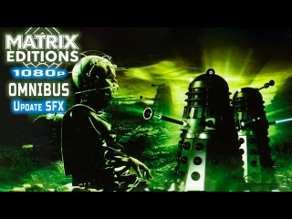
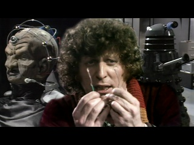
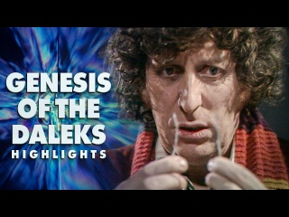
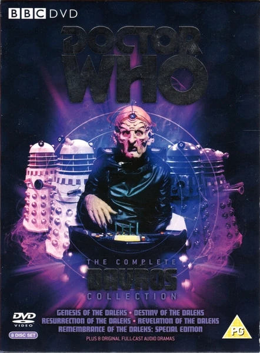
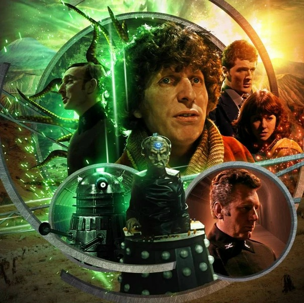

Субтитры: Русские {Елена Жилина} и Английские |  |
|---|---|
Субтитры: отсутствуют |  |
с обновлением визуальных эффектов (cunningmunki) Субтитры: отсутствуют |  |
Субтитры: отсутствуют |  |
Субтитры: отсутствуют |  |
Genesis of the Daleks
Дата выхода: 8 марта - 12 апреля 1975
Формат: 6 эпизодов по 25 мин.
| |
Повелители Времени отправляют Доктора на планету Скаро в решающий момент тысячелетней войны между каледами и талами — его задача предотвратить появление самой разрушительной силы во Вселенной. На фоне радиоактивных пустошей и руин цивилизации Доктор сталкивается с амбициозным учёным Давросом, который в погоне за «идеальной формой жизни» проводит жестокие эксперименты над остатками своего народа. Сара Джейн и Гарри оказываются в эпицентре этической дилеммы: можно ли уничтожить зарождающуюся расу, чтобы спасти миллиарды будущих жизней? В этой серии впервые появляется Даврос и показано создание далеков — а знаменитая сцена, где Доктор замирает перед кнопкой уничтожения их зародышей, стала одной из самых обсуждаемых моральных дилемм «Доктора Кто».
  VHS - окт. 1991 / Boxset - сент.2001 |  DVD+ Boxset - 10 апреля 2006 |
|---|---|
 Blu-ray - 8 июля 2019 * Версия в нашей группе |  Blu-ray (сборник историй) - 9 ноября 2020 |
